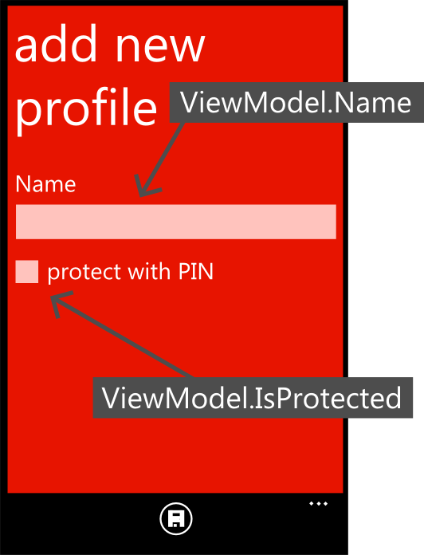

Introduction
- MVVM stands for Model, View, View-Model
-
It is just a
pattern
, that organises your code into three roles,
- 'View' code deals with the user interface (UI)
- 'Model' code stores the application data
- 'View-Model' code is (usually) a single object that interfaces the View code with the Model code
- The MVVM pattern works well in Windows Phone because of 'Data Binding'
Data binding
- Most XAML attributes in the View can be 'bound' to a property of a C# object.
- When the 'bound' C# property changes, this is automatically reflected in the View and (optionally) vice-versa
- We write the View-Model object to be the bound object

Benefits of MVVM
- Lots of the coding necessary to synchronise the UI with the application state is taken care of
- Expression Blend has tools to mock up a fake View-Model object with sample data so you can design the UI before you have a working C# backend
- Binding is defined in the View only which means we can substitute another View (e.g. web or desktop frontend) relatively easily
- Minimal programming in the UI means easier unit testing
Implementing MVVM
The skeleton project contains a directory for each of these roles. Files are organised into each as follows,
View
-
Organised under the
YourAppName.Viewnamespace - Pages and UserControls (i.e. custom widgets) defined in XAML and their code behind files (i.e. the .cs or .vb files that are linked to the .xaml file in the Visual Studio project explorer) belong in the View
- In the code-behind files we generally put only code to handle UI behaviour (e.g. showing a MessageBox or handling a button click)
- If a button click does something that is not to do with the UI, for example save an object to a database, then the code-behind should immediately call a method on the View-Model
- Converter classes belong in the View
- It should be possible to remove the View code folder from the project and the application should still compile and run (albeit with no way to input or output data)
Model
-
Organised under the
YourAppName.Modelnamespace - Code that implements the interface for the data source (e.g. database, XML files, webservice etc.) belongs in the Model
- However the actual calling of the interface should be done in the View-Model
- Code that initialises and populates the data source on first use of the app belongs in the Model
- The classes that contain the data from the data source e.g. the 'Profile' class and the 'Order' class belong in the Model
- However, collections of these classes, for example to be displayed in a list in the View, should be in the View-Model
- Code to 'migrate' (i.e. update) the storage between different versions of the application, e.g. to change the XAML or database schema, belong in the Model
View-Model
-
Organised under the
YourAppName.ViewModelnamespace -
The object that provides the properties for UI binding is the View-Model (call it
AppViewModelto avoid name conflict with the namespace) - Methods that takes the raw data from the Model and process it for the UI go in the View-Model class
- Methods that process submitted user input to be saved to the Model goes in the View-Model class
- Smaller applications usually have one View-Model class for the entire application, larger applications may split so that there is one View-Model class for every XAML page
-
A good place for the View-Model object is on the
Appobject which is globally accessible,-
Create a public property 'VM' for the View-Model in the App.xaml.cs code-behind. This can be instantiated in the constructor. Now you can access the same View-Model instance anywhere in the app using
App.VM
-
Create a public property 'VM' for the View-Model in the App.xaml.cs code-behind. This can be instantiated in the constructor. Now you can access the same View-Model instance anywhere in the app using
- Write the View-Model so that slow operations do not all occur at the same time when the app is loading e.g. if your app reads a lot of data from a database, only load enough to display the loading page
Other code
- Other code which does not easily fall into one of the three categories such as e.g. code for processing speech, can be put in a separate directory